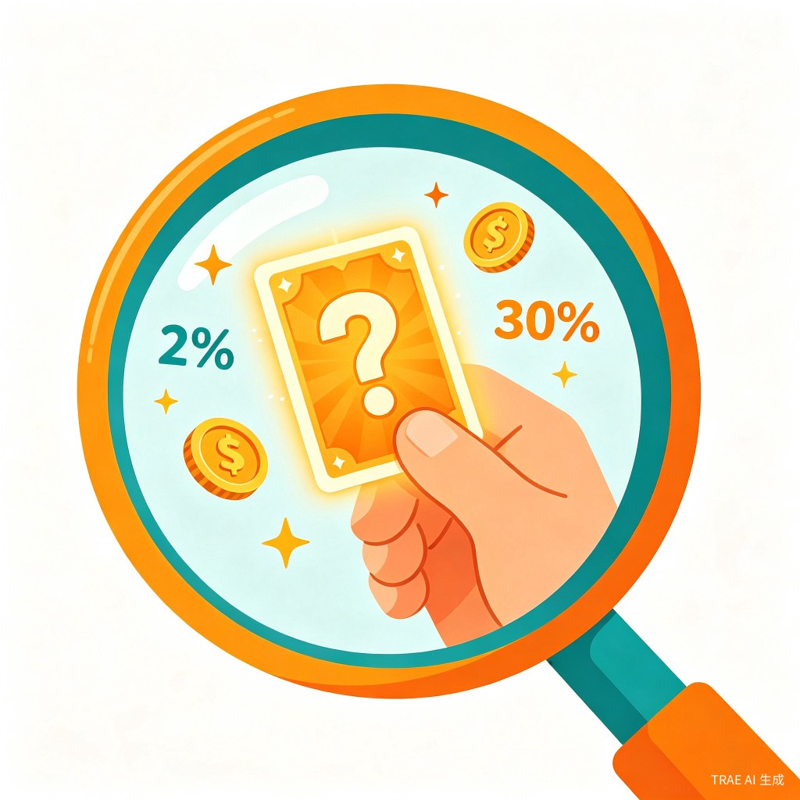
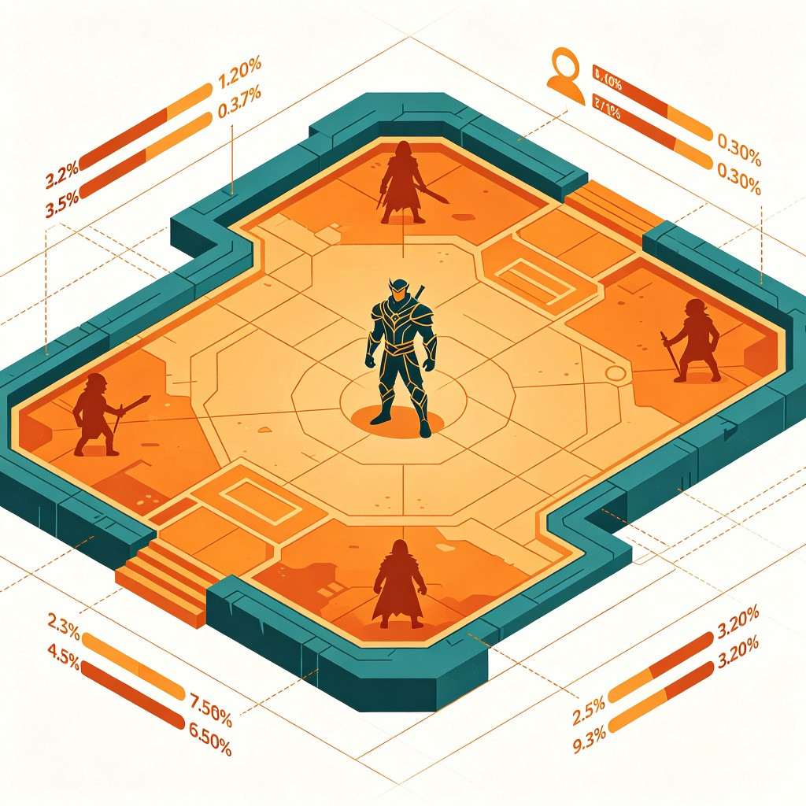
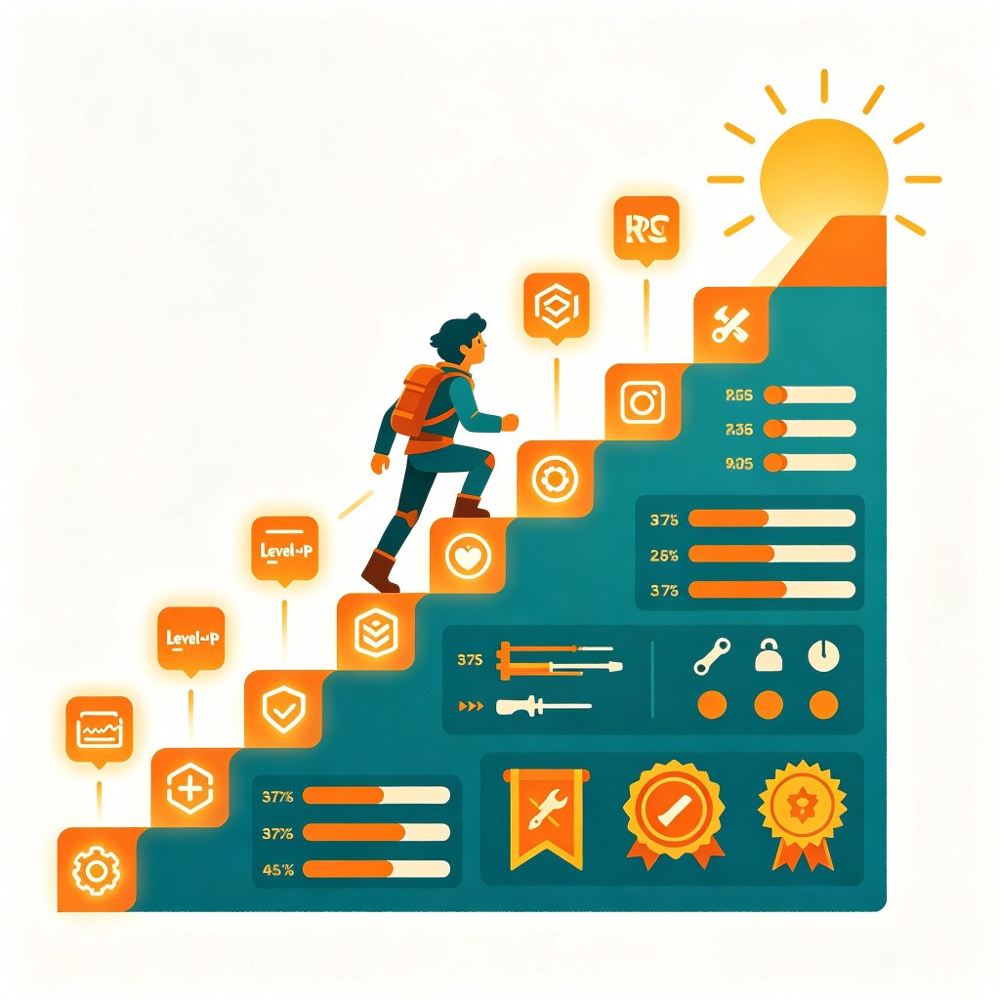
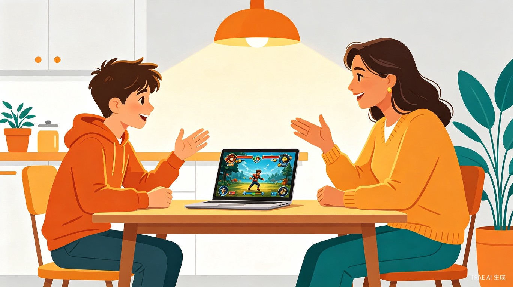

01🎮 创意名称 + 创意介绍
《让游戏改造游戏：未成年人游戏沉迷反向试验》
我想做一个面向"未成年人游戏沉迷"的互动教育产品，用游戏本身去拆解游戏。不是简单地告诉学生"不要玩游戏"，也不是站在家长的角度讲大道理，而是让学生亲自进入一个被故意设计过的"反向游戏体验馆"——开局就是顶级账号、极高数值、强运抽卡、碾压对手、无限成长。让他在短时间内体验到游戏快感的极致，然后在结局反转中看见：原来这些爽感、成就感、差一点就成功的冲动，很多时候都是可以被系统设计出来的。
很多学生沉迷游戏，不是不知道学习重要，而是游戏更快给反馈、更容易给成就感。单纯打骂、说教、没收手机，往往只能短期压住，不能真正改变他们对游戏的看法。这个项目不一定能解决所有问题，至少是个方向。
我自己就深受游戏沉迷影响长大。家长、老师、亲戚该骂的骂过、该劝的劝过，道理我不是不懂，但最后还是败给了自制力差。现在我从事游戏开发行业，但当兴趣变成工作，大部分人都不再像以前那样喜欢游戏——它会变成重复、压力、数值、任务和消耗。所以我想反过来做一个试验：既然游戏可以让人沉迷，那能不能也用游戏本身，让人看穿沉迷？
🧩 产品形式
现阶段做成网页演示版，围绕 3 类国民级游戏类型设计 3 个短体验，每类约 30 分钟。

🎲 抽卡养成类
前期不断让用户尝到甜头，后期制造"再来一次就能出"的错觉。最后揭示抽卡概率、沉没成本、侥幸心理和诱导付费背后的设计逻辑。

⚔️ MOBA 竞技类
开局天崩，4 个队友陆续掉线，但玩家伤害越打越夸张，敌人机械送人头。让用户发现，"我很强"可能只是系统调弱敌人后的幻觉。

📈 MMORPG 数值养成类
等级、装备、强化、战力、坐骑层层叠加，永远有新的坑。最后揭示：有些游戏不是让你到达终点，而是让你永远觉得"还差一点"。
⏱️ 30 分钟体验结构
顶级账号、无限资源、碾压全场。让学生快速体验游戏快感的极致。
游戏机制被一件件拆开，穿插真实社会治安案件视频作为反面案例。
用接地气的独白，把虚拟成就和现实学习、家庭、未来做一次对照。
📺 反面案例与真实案件
结局反转不仅是机制层面的"原来是这样"，更会引入真实社会治安案件视频作为反面案例：偷家长银行卡氪金、未成年人深陷线上赌博、沉迷后辍学、被骗、借网贷、甚至涉案的真实事件。
每一类游戏对应一类失控路径：抽卡对应金钱失控，MOBA 对应不良社交圈，MMORPG 对应时间和现实生活失控。真实案件告诉学生：游戏可以是娱乐，但失控的代价是真实的。

🔁 互动反馈
每一个体验结局都是互动式短视频，用户的选择决定走向：
| 用户选择 | 结局类型 | 后续反馈 |
|---|---|---|
| 继续氪金 / 熬夜 / 逃课 | 反面教材 | 播放对应类型的真实案件视频，展示失控后的代价。 |
| 停下来 / 退出 / 反思 | 正向坚持 | 周期性提醒（演示版模拟界面，未来可对接微信、短信等）。 |
| 反复横跳 / 拒绝面对 | 开放式反思 | 更细分的结局分支，用当事人独白追问"你还要这样多久"。 |
你真的打算一直这样玩下去吗？
你是在享受游戏，还是在逃避现实？
你在游戏里赢了很多次，现实里又赢过几次？
父母辛苦供你读书，你真的一点都不在乎吗？
02👥 目标用户及痛点
🎯 面向用户
🎒 有沉迷倾向的学生
正在读书、缺乏自控力的未成年人，已被游戏数值、抽卡、排位等机制持续吸引。
🏠 管不住孩子的家长
已尝试过说教、打骂、没收手机、断网，效果短暂、容易复发。
🏫 班主任 / 老师
面对学生沉迷问题，只能靠口头警告、家长会，缺少更有冲击力的教育素材。
📍 使用场景
家长当作"游戏奖励"引导孩子打开 · 老师作为班会、心理课的互动内容 · 学校公益活动现场体验 · 家庭和孩子一起玩完后的对话起点。
🧠 当前痛点
面对孩子沉迷游戏，常见方法还是说教、打骂、没收手机、断网、封闭管理，甚至极端治疗。但这些方式基本都站在大人角度，学生表面服从，心里并不认同。
很多孩子真正的问题不是不知道玩游戏不好，而是现实学习太枯燥，反馈太慢，失败太多。游戏却能马上给奖励、给等级、给胜利、给社交、给存在感。所以这个产品想换一个角度：不先讲道理，而是先让他玩，玩到爽，玩到看穿，再把机制拆开给他看。
03🌟 价值与意义
🌍 社会价值
未成年人接触游戏、短视频、抽卡、充值的机会越来越早。家长稍不注意，孩子就可能在学习习惯还没建立起来之前，先习惯了高刺激、快反馈的娱乐模式。
这个创意的社会价值不在于保证"治好网瘾"，而是提供一种新的教育方向：用学生熟悉的游戏语言，去拆解游戏沉迷本身。哪怕只能让一部分学生开始怀疑"我是不是被游戏牵着走"，也有意义。它也提醒家长和老师：很多学生缺的不是道理，而是一次真正从自己主观体验出发的反思。
📚 教育价值
这个产品不只是反游戏，也思考一个更远的问题：如果学习本身也能拥有游戏里的反馈机制，会不会更容易让学生坚持？
未来可以把现实学习和生活做成现实任务系统：
| 游戏机制 | 现实替代 |
|---|---|
| 每日任务 | 做几道题、看一本课外书、坚持早睡少玩手机 |
| NPC 发布任务 | 父母发布家务、学习、运动等任务并验收 |
| 商城兑换 | 完成任务后兑换零食、饮料、玩具、合理娱乐时间 |
| 等级成长 | 用连续打卡展示进步，而不是和别人攀比 |
| 剧情推进 | 把升学、技能、兴趣做成阶段性任务线 |
💡 商业价值
这个项目本身商业价值不强，甚至对部分游戏厂商来说是负价值。它不是为了让人更沉迷，而是为了让人看穿沉迷。更适合作为学校、家庭、公益组织中的互动体验产品，以及一次关于未成年人游戏沉迷的社会倡导。
🛡️ 延伸思考
未来如果技术和隐私保护能找到更好的平衡，未成年人保护可以更智能——通过更可靠的身份校验、人脸识别或设备检测，让未成年人更难绕过防沉迷系统。这部分不是我现阶段能解决的问题，更像一种长期倡议。
我现实的定位是：先做一个可演示、可传播、能引发讨论的教育推广试验。它不一定能解决所有问题，但至少可以提供一个方向。
不要只让大人骂孩子玩游戏。
也许可以让游戏自己，把游戏的真相说出来。